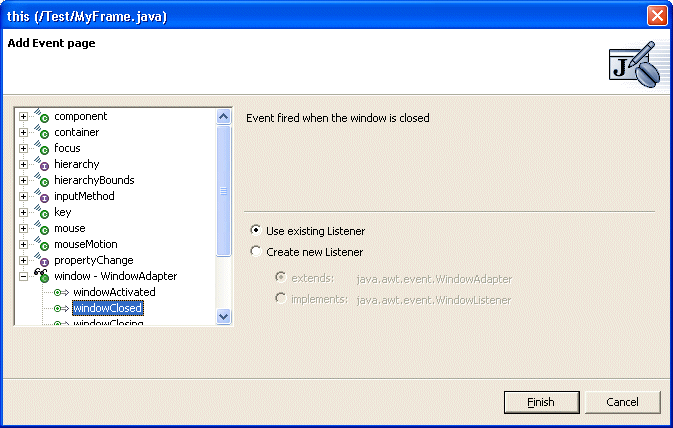

JavaBeans events are signalled when an activity occurs, such as a button being pressed or a window being closed. The Visual Editor for Java shows events in the JavaBeans tree view, and allows you to add and remove events.
The list of defined events for a JavaBean is described in its BeanInfo class, which also controls the commonly used or preferred events.
You might want to add an event to a JavaBean if you want something to happen when the JavaBean is generated, such as a database update when a button is pushed. The JavaBean raising the event is the source, and the object that gets called back when the event is raised is known as the listener. Each JavaBean has an interface that allows it to notify the listeners for each event, as well as methods to add and remove listeners.
Typically, if the source JavaBean has a method XXX, there is a listener interface, XXXListener, and two methods. It is important that XXXListener extends java.util.EventListener. If it doesn't, and unless a specific BeanInfo is supplied, the event will not be discovered.
- addXXXListener(XXXListener aListener)
- removeXXXListener(XXXListener aListener)
The methods on the XXXListener interface itself depend on the semantics of the event, but the convention is that their signature is void <eventOccurenceMethodName>(<EventStateObjectType> evt);. It is important that XXXListener extends java.util.EventObject. If it doesn't, and unless a specific Beaninfo is supplied, the event will not be discovered.
An example of an event is the JavaBean java.awt.Component, which raises events when the mouse moves over it. The listener interface, java.awt.event.MouseMotionListener, implements the following two methods:
- void mouseDragged(MouseEvent evt);
- void mouseMoved(MouseEvent evt);
To add a mouse listener, the java.awt.Component has the following two methods:
- public void addMouseListener(MouseListener evt);
- public void removeMouseListener(MouseListener listener);
The second style of event is generated by a JavaBean when a property value changes. An example of this is the 'enabled' property on javax.swing.JButton. A property that fires an event when its value is changed is known as a bound property. Instead of having a separate listener interface for each bound property, there is a generic listener interface java.beans.PropertyChangeListener which has a single callback method void propertyCanged(PropertyChangeEvent evt); The argument PropertyChangeEvent has three methods that can be queried by the receiver of the method:
| String getPropertyName() | The name of the property that was changed on the JavaBean that caused the event to fire |
| Object getNewValue() | The new value of the property |
| Object getOldValue() | The value of the property before it was changed |
To register interest in a JavaBean's property changes there are two methods: void addPropertyChangeListener(PropertyChangeListener listener); void addPropertyChangeListener(String propertyName, PropertyChangeListener listener);
The first of these methods is always present on a JavaBean that has bound properties. However, the second is optional and depends on the style of event registration used by author of the JavaBean. For example, AWT components use the first style of property change registration, while Swing components use both styles.
To use an event there are three objects:
- The JavaBean that raises the event ( the source )
- The class that receives notification from the source ( the listener )
- The class that implements the logic that occurs when the listener is called back.
Usually the last two are combined, so that the class that executes the logic either implements the listener interface directly or uses an inner class. The styles of code that the Visual Editor for Java recognizes and generates are covered in the section on Event Code Generation.
Adapter classes
Many listener interfaces have more than one callback method. An example is java.awt.FocusListener that has two methods; focusGained(java.awt.FocusEvent event) and focusLost(java.awt.FocusEvent event). When creating a listener class that implements the interface the Java compiler insists that all of the interface methods are implemented, which often results in many empty methods being created to satisfy its requirements when only one or some of its methods actually contain code. This is shown below where a FocusListener is used to perform some logic when a javaBean gains focus. However, an empty focusLost method must be provided.
javaBean.addFocusListener(new java.awt.event.FocusListener() {
public void focusGained(java.awt.event.FocusEvent e) {
doFocusGainedCode();
}
public void focusLost(java.awt.event.FocusEvent e) {
}
});
To avoid having many empty listener methods for many listeners, Adapter classes are provided. These implement the listener interface, and provide empty no-op implementation of its methods. The advantage is that the listener can extend these, and only specialize methods of choice without having to provide default implementations for the rest ( these are inherited from the Adapter ).
javaBean.addFocusListener(new java.awt.event.FocusAdapter() {
public void focusGained(java.awt.event.FocusEvent e) {
doFocusGainedCode();
}
});
The Visual Editor is able to recognize and work with Adapter classes, and the section BeanInfo Events describes how you can associate adapter classes for your own events to the Visual Editor.
Events can be seen using the Java Beans view. This is a tree view that shows the class being edited and its Java beans, and container classes with their components displayed as children.
In addition to showing JavaBeans and their container/component relationship, the Java Beans view has three modes to show events:
- No Events
- Show Events
- Expert Events
To change mode, use the drop-down menu on the Java Beans view. The default value is 'Show Events'. When the value is changed, it is saved and becomes the new default.

When 'No Events' is selected, then no events are shown in the tree.
When 'Show Events' are selected, then the events used by each Java bean are shown as children in the tree. For an event to be used by a JavaBean, there must be a registered listener and the callback method must have some code within it. The list of recognized source code patterns used by the Visual Editor are described in the source code patterns for events section. The Java Beans view below shows the events, where the JFrame has a windowOpened event, and the button has an actionPerformedEvent. The button also has a PropertyChangeListener for its enabled properties, and this is shown with a blue arrow instead of green.

Each event is made up of the source Java bean
( the JFrame or JButton in the example being used ), a class that implements
the listener interface that is added to the source using addXXXListener(XXXListener),
and some code within the body of the callback method. In the 'Show Events'
mode, the JavaBean source is shown with its callback methods displayed as
children. Items in the tree for events are green arrows  , and blue arrows
, and blue arrows  if the items are for property change events.
if the items are for property change events.
In the "Expert Events" mode, each listener for the JavaBean is shown as a child tree node, and the events are shown beneath each listener. This increases the number of items in the tree, but it shows more detail about how the events are attached to the source JavaBeans. The option of the two modes lets you decide which level of detail you wish to work with.
In expert mode the
icon used for the listener shows the type of listener class. If the listener
is an anonymous inner class that implements the listener interface the icon
 is used, and if the listener is an anonymous innerclass that extends a listener
adapter class the icon
is used, and if the listener is an anonymous innerclass that extends a listener
adapter class the icon  is used.
is used.
In addition to anonymous inner
classes being used for listeners, the Visual Editor is also able to parse
and recognize named classes and shared listeners. If the listener is not anonymous
in expert mode, then the icon is  . If the listener is shared by more than one JavaBean,
it is
. If the listener is shared by more than one JavaBean,
it is  .
If the listener class is used by a single event then these are listed as children
of the listener. However, if the listener class is used by more than one event
listener interface for the JavaBean, then in Expert mode these listener interfaces
are shown as as separate children of the listener class. This is shown
below:
.
If the listener class is used by a single event then these are listed as children
of the listener. However, if the listener class is used by more than one event
listener interface for the JavaBean, then in Expert mode these listener interfaces
are shown as as separate children of the listener class. This is shown
below:
The source for this is shown below. The inner listener class IvjEventHandler is used once by the first button (this) for a keyPressedEvent, and twice by the "Cancel" button, once for keyPressed ( that is part of the key event ) and another time for actionPerformed ( that is part of the action event ).
class IvjEventHandler implements java.awt.event.ActionListener, java.awt.event.KeyListener { public void actionPerformed(java.awt.event.ActionEvent e) {
if (e.getSource() == VCEStyle2.this.getCancelButton())
connEtoC3(e);
};
public void keyPressed(java.awt.event.KeyEvent e) {
if (e.getSource() == VCEStyle2.this.getCancelButton())
connEtoC2(e);
if (e.getSource() == VCEStyle2.this)
connEtoC1(e);
};
public void keyReleased(java.awt.event.KeyEvent e) {};
public void keyTyped(java.awt.event.KeyEvent e) {};
};
Selection synchronization
The Visual Editor for Java is a source centric editor, so the views reflect the recognized code structures in the source. Synchronization of selection is a key feature of the editor, and when an item is selected in the Java Beans tree, the source code will show the relevent lines in the Java code.
When an event is selected the source code statements for the callback method on the listener is shown.

In "Expert Events" mode, when a listener is selected, the source code statement that adds the listener to the source is shown.

If the listener is shared ( so the callback method may be used by more than one JavaBean ) then selection will drive to the relevent block of code responsible for processing the JavaBean that the event is a child of. This is shown below, where the single inner class IvjEventHandler is used by by both the class itself (this) and by a "Cancel" button. The keyPressed method has if blocks within the keyPressed(java.awt.event.KeyEvent) callback method to separate the logic processed when each button is pressed, and selection drives to the relevent section of code.

Adding events
Events are added using the pop-up menu on the Java bean, in either the graphical canvas or the Java Beans tree view. The Events menu is a cascaded menu, that shows the preferred events on the Java Bean. To define which events are preferred on a Java Bean, see BeanInfo Events.
For a JFrame the preferred events are windowClosed and windowOpened, and these are shown on the Events cascade menu below.

When you add an event, if there is an existing listener that can be used, then the callback method is added to it. Otherwise, a new listener is created. For an existing listener to be used, it must be an anonymous inner class on the JavaBean that implements the listener interface. It must have an empty method body for the callback method, or extend the adapter class. and have no existing method for the event callback being added. For a property, an existing PropertyChangeListener will be re-used if it is added to the JavaBean with the single argument method addPropertyChange(PropertyChangeListener listener). If it doesn't already have code, processing the property is added.
If there is no candidate existing listener onto which the callback method can be added, then a new listener is created. This will be an anonymous inner class, and if an adpater class has been defined for the event then the listener will extend this. Otherwise, it will implement the listener interface. After the event is added a stub method is created with a //TODO comment. The stub method is an indicator of the source code that will be executed when the event occurs, and you should then change this to perform your desired behavior. The //TODO comment appears in the Tasks window, and allows you to flag which methods are incomplete. This is so that you can locate them later and remove the //TODO comment once the callback logic has been written.
In the above example the windowOpened method already exists. If this is a listener that extends the adapter, the same listener will be re-used because it doesn't already have a windowClosed method . The method windowClosed(WindowEvent e) is added, and the method stub and //TODO comment added as shown below.
this.addWindowListener(new java.awt.event.WindowAdapter() {
public void windowClosed(java.awt.event.WindowEvent e) {
System.out.println("windowClosed()"); // TODO Auto-generated stub windowClosed()
}
public void windowOpened(java.awt.event.WindowEvent e) {
callExistingWindowOpenedLogic();
}
});
In expert mode, events can still be added to the JavaBean as shown above, but they can also be added to a listener in the Java Beans tree. The Events menu shows all of the event callback methods on the listener, and any that are already used are disabled.

For a PropertyChangeListener the pop-up menu shows all of the bound properties on the JavaBean. If any are already used by the PropertyChangeListener then they are disabled.
A listener added with a single argument method has an if statement that checks the name of the property before processing the logic for each property callback as shown below.
javaBean.addPropertyChangeListener(new java.beans.PropertyChangeListener() {
public void propertyChange(java.beans.PropertyChangeEvent e) {
if ((e.getPropertyName().equals("font"))) {
System.out.println("propertyChange(font)");
}
}
});
This allows a PropertyChangeListener added with a single argument method to be used for more than one property ( by having multiple if{} blocks used ), and when the second and subsequent property callback is added a new if{} blocks are added.
If the propertyChangeListener is added to the JavaBean using the two argument method addPropertyChangeListener(String propertyName, PropertyChangeListener listener) then it is specific to a particular property so cannot be re-used for another property. In this case all of the Events cascade menu children are disabled.
Add Event dialog
In addition to adding events from the cascade menu, you can open the Add Event dialog, available from the Events menu from the JavaBean.

The Add Event dialog shows all of the available events for the source JavaBean in a tree. The tree has the event listeners as the first level of entries, and beneath each listener entry is the possible callbacks the event can raise. To add an event, expand the listener, select the desired event callback and press Finish.
The
dialog allows you to specify whether you wish to create a new listener or
use an existing one. When the dialog opens it analyzes the existing
listeners, and if it finds one that it believes can be re-used, then it indicates
this by having a different tree icon, if the existing listener extends an adapter class,
or otherwise.
Within the listener itself existing events are shown with a green arrow
, and available
events are shown with an incomplete arrow 

The radio choices on the dialog all you to specify whether or not you want the existing listener used or a new one created. When a new one is created you can choose whether you want it to extend the adapter class or just implement the listener interface. Radio choices that are no applicable are disabled, for example if there is no existing listener, or an existing listener is selected but the selected event is already used then "Use existing listener" is disabled. If there is no available adapter class for a new listener then the "extends: ADAPTER_CLASS_NAME" radio button is disabled.
If you select propertyChange in the Add Event dialog, then the radio buttons allows you three ways of adding the callback. A new listener can be created that can be added to the JavaBean using the method a ddPropertyChange(PropertyChangeListener listener). If this occurs then the listener's generic callback method propertyChange(PropertyChangeEvent event) is used for all property events. On some JavaBeans ( such as Swing components ) the two argument method addPropertyChange(String propertyName, PropertyChangeListener listener) is present, and the dialog detects this and enables ( and selects by default ) a radio button to select this as the method to use for the new listener.
A listener that is added using the two argument method is specific to a particular property so cannot be re-used for another property. A listener added with a single argument method has an if statement that checks the name of the property before processing the logic for each property callback as shown below.
javaBean.addPropertyChangeListener(new java.beans.PropertyChangeListener() {
public void propertyChange(java.beans.PropertyChangeEvent e) {
if ((e.getPropertyName().equals("font"))) {
System.out.println("propertyChange(font)");
}
}
});
This allows a PropertyChangeListener added with a single argument method to be used for more than one property ( by having multiple if{} blocks used ).
Deleting events
To delete an event select it in the Java Beans tree view and use the Delete pop-up menu option or the keyboard delete key.
In "Show events" mode this will remove from the Java source the callback method for the event. If the listener class implements an interface that requires a method body for compilation, then the method contents are cleared out rather than the method being removed entirely.
If having deleted the callback method there are no remaining method body implementations on the listener and the listener is an anonymous inner class, then the listener itself is removed together with the method that registers it with the source. In the above example, the Window listener only has a windowOpened callback, so when windowOpened is deleted then the listener and the addWindowListener(...) statement that adds it to the source will be removed.
In "Expert Events" mode when a callback method is deleted it is removed from the listener, or replaced with an empty method body if the listener implements the interface and must have a method to successfully compile. Unlike "Show Events" however, no cascaded delete of the listener is done, so even if the listener has no remaining callback method bodies left is it not automatically removed.

Delete in "Expert Events" mode can be thought of as deleting the selected tree item from its parent. As well as removing individual callbacks from a listener, the listener itself can be selected and deleted. This will remove the listener from the Java Bean. If the listener is an anonymous inner class it will be removed from the source, however for a name listener class it will still remain after it has been removed from Java beans that use it.